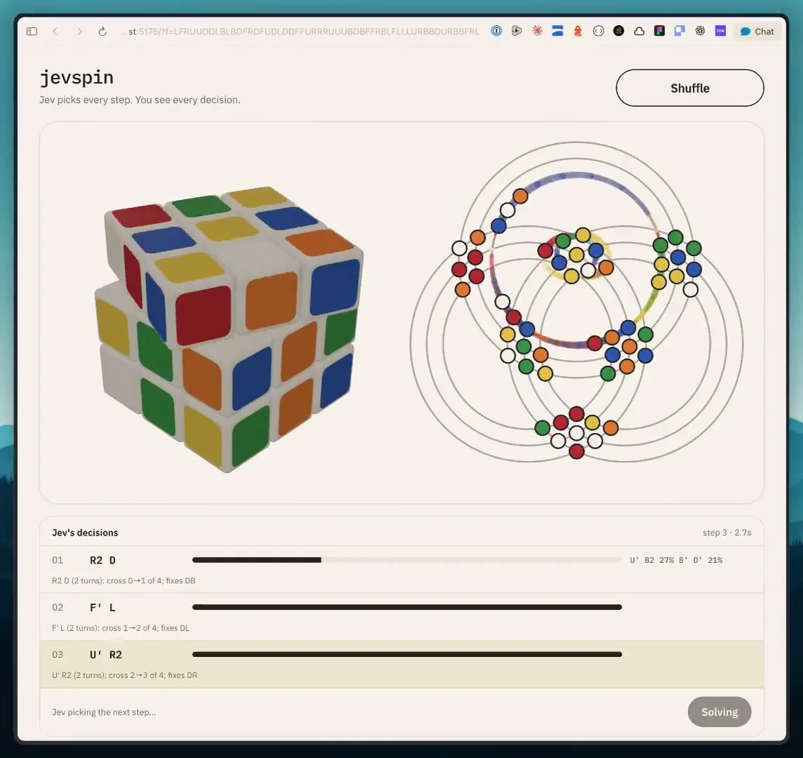
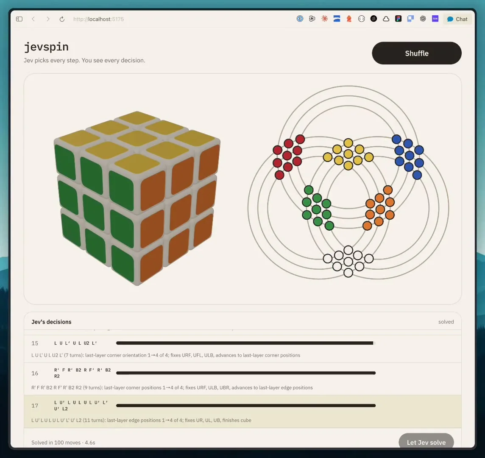

このUIがしていること
選択肢を作るのはコード、選ぶのはJev、という分担が画面のレイアウトにそのまま出ている。自由に生成させる場合より、各決定の妥当性を確認しやすい。
- 1つ目の決定では選択肢の確率が分散し、次点が併記される（27%、21%）。以降は棒がほぼ満たされる。確信の度合いが行ごとに違うことが見える。
- 各行の説明文が、候補を選ぶときの手がかりと、選んだ後の結果表示を兼ねている。
- 結果の状態（キューブ）とJevの選択の記録が同じ画面に並び、対応を追える。
- 「17の決定」と「100 moves」は数え方が違う（1決定が複数の手を含む）。
キャプチャ
{kind=link}

（原寸の画像を開く）{kind=link}

（原寸の画像を開く）見る箇所左の3Dキューブと右のステッカーの軌道図、下の「Jev's decisions」の各行（手順、効果の説明、確率の棒）、完了時の表示
入力から画面の変化まで
-
判断への入力
キューブの現在の状態と、現段階で許される合法手の候補12個。各候補には「cross 0→1 of 4; fixes DB」のように、その手の効果が文で添えられる。
-
Jevの判断
12個のうちどれが最良かを選ぶ。作者は「Jevはアルゴリズムを知らない。判断するのは12個のうちのどれか」と説明している。
-
結果がUIをどう変えるか
選ばれた手が3Dキューブとステッカーの軌道図に反映され、決定のリストに1行追加される。1枚目は3つ目の決定の処理中で、完了時（2枚目）は「Solved in 100 moves · 4.6s」、17番目の決定で終わる。
- 判断型の見立て
- Choice出典に明記
- 作者は「12個のうちどれが最良かだけをJevが判断する」と説明している。
Jevとの適合
制約された候補の中から選ぶ、というJevの得意な形。ただし、解の効率や最適性、失敗時の巻き戻しの方針はこの動画では確認できない。
確認範囲と未確認事項
作者の投稿動画から静止画を確認。ソルバーのライブラリを使わず、コードが合法手を作りJevは選ぶだけ、という構成は作者の説明。費用（約$0.0007）も自己申告。
- 確認済み動画から得た2枚の静止画に見える決定リスト、確率の棒、完了表示、投稿文の説明
- 未検証解の最短性、他の初期状態での成功率、費用（約$0.0007は自己申告）、コードの中身
- 推定扱い確率の棒が各候補の確率のどの値を示すか
- 引用X投稿は2026-09-20（UTC）。動画から必要な範囲の静止画を切り出して引用。権利は作者に帰属する